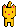
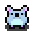
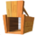
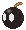

Eat Mice!
Les règles
Vous contrôlez le .
Il faut manger toutes les  avant la fin du temps pour gagner.
Pour ça, il faut se deplacer avec les flèches du clavier.
Les objets
- : Vous le contrôler à l'aide des flèches du clavier.
- : Elles se déplacent seul, il faut les manger.
- : La trappe est un piège pour les souris, le chat ne peux pas tomber dedans.
- : La bombe est un piège pour le chat, si vous allez dessus, vous mourrez, cependant, les souris peuvent aller dessus.
- : La tombe apparait si vous mourrez en allant sur une bombe.
- : Le mur définit les limites du terrain.
Le score
Il est calculé en fonction du temps restant et du nombre de souris mangé.